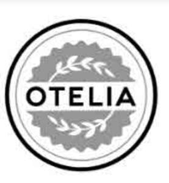

Trade Mark Journal No.2025/044 31 October 2025
UK00004279511 17 October 2025 (29,30,31)

- Class 29
- Blended oil for food; Butter; Canola oil; Cheese; Coconut oil; Coconut oil and fat [for food]; Cooking oil; Edible oils; Corn oil; Maize oil; Corn oil for food; Cows' milk; Cream, being dairy products; Cream powder; Dried cranberries; Dried dates; Dried fruit; Dried vegetables; Dried fruit products; Dried fruit mixes; Dried milk powder; Dry whey; Edible oils and fats; Fermented milk; Fermented soybeans (natto); Flaxseed oil for culinary purposes; Fruit-based meal replacement bars; Fruit purees; Grapeseed oil; Honey butter; Linseed oil for culinary purposes; Milk powder; Milk powder for food purposes; Olive oil for food; Olive oils; Peanut oil [for food]; Peanut oil for food; Rape oil for food; Rice bran oil for food; Sesame oil; Sesame oil for food; Soybean milk [soy milk]; Soybean oil; Sunflower oil for food; Sunflower oil [for food]; Tofu; Vegetable oils for food; Vegetable fats for food; Oils and fats for food; Whey; Whipped cream; Yogurt; Nut oils; Salad oil; Almond oil for food; Pumpkin seed oil for food; Extra-virgin olive oil; Linseed oils [edible].
- Class 30
- Breakfast cereals; Cakes; Cereal bars; Cereal-based bars; Chocolate bars; Chocolate-covered nuts; Chocolate-based meal replacement bars; Cooked rice; Cookies; Crackers; Crushed oats; Edible flour; Cereal bars and energy bars; Flaxseed for culinary purposes [seasoning]; Flour for food; Graham crackers; Muesli bars; Cereal-based snack bars; Cereal-based snack food; High-protein cereal bars; Honey; Honey [for food]; Husked oats; Husked rice; Muesli; Cereal preparations consisting of oatbran; Oat flakes; Pellet-shaped rice crackers (arare); Processed cereals; Puddings; Puffed rice; Ready-to-eat cereals; Rice; Rice flour; Rice-based snack food; Rolled oats; Wafers [biscuits]; Crispbread snacks; Wholemeal rice; Wild rice [prepared]; Processed quinoa; Processed hemp seeds [seasonings]; Processed squash seeds [seasonings]; Oilseed flour for food; Flour of oats; Oatmeal.
- Class 31
- Barley; Wheat; Unprocessed chia seeds; Fresh nuts; Oats; Soya beans, fresh; Unprocessed cereals; Unprocessed rice; Almonds [fruits]; Fresh almonds; Hazelnuts.
FEI AN
Representative: Way Insight IP Services LTD